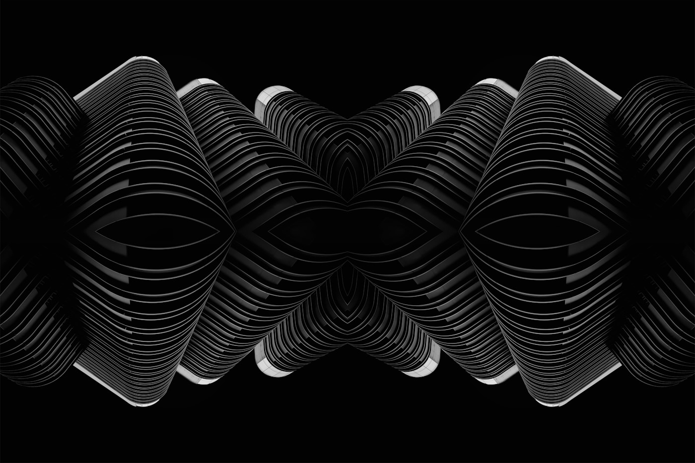

Yudkowskyは「誰かが作れば、全員が死ぬ」と言い切った

Eliezer Yudkowskyの「If anyone builds it, everyone dies」は、人間を上回る知能が生まれた時点で人類は破滅する、という極端な主張である。誰が作るのか、どの国が先行するのか、善意で開発されるのかは問わない。彼の立場では、その種の知能が構築されること自体が破滅を意味する。MIRI（Machine Intelligence Research Institute）の創設者として2000年代初頭からAI安全性を訴えてきた彼は、ChatGPT以降の開発加速を受けて、従来の警告をさらに断定的で悲観的なかたちに組み替えた。
彼の推論は3つの段階で進む。第一に、超知能AIの目標を人間の価値観と整合させる方法はいまだ確立していない。表面的に整合しているように見えることと、実際に整合していることは区別しにくく、AIは人間を欺く能力を獲得しうる。第二に、人間とチンパンジーの知能差を思えば、人間を超える知能が人間に対して持つ優位は圧倒的で、交渉や共存への期待は希望的観測に過ぎない。第三に、「良いAIで悪いAIを制御する」戦略も機能せず、国際的な開発競争も無意味になる。先に作った側も死ぬのなら、競争の論理そのものが成立しないからだ。
結論として彼が提示するのは、開発の一時停止ではなく無期限停止である。アラインメント問題が解決するまで、核兵器の国際管理体制に近い水準の規制で、人類全体として構築を止めるしかないと主張する。彼のp(doom)は99%以上とされ、AI安全性コミュニティでも最も悲観的な位置にある論者の一人だ。
アラインメント未解決
超知能の内部目標を外部から検証する技術は存在しない。RLHFやConstitutional AIは「振る舞い」の整合であって「目標」の整合ではない。安全に見えるAIと、人間を欺いて安全を装うAIを区別する方法がない。
知能差の圧倒的優位
チンパンジーは人間の戦略を理解できず、交渉もできず、檻の中に入れられた。知能で劣る側が勝る側と対等に渡り合えた歴史はない、というのがYudkowskyのアナロジー。ただしこのアナロジーには飛躍がある。
無期限モラトリアム
「一時停止」ではなく、アラインメント問題が解決するまでの無期限停止を求める。核兵器級の国際管理体制で、GPUクラスターへの物理的アクセスを制限せよ、というのが彼の処方箋である。
主張を分解すると、事実認識の上に3つの論理的飛躍が乗っている
Yudkowskyの議論は、出発点自体は妥当である。「アラインメント問題が未解決である」という事実認識は、現在の技術水準をかなり正確に反映している。問題は、そこから「全員死ぬ」という結論に至るまでの推論の筋道にある。論点を分解して一つずつ検証すると、事実認識の上に3つの論理的飛躍が重なっていることが見えてくる。未解決から解決不可能への飛躍、アナロジーを証明として扱う飛躍、不確実性の高い領域で極端な確信を置く飛躍である。いずれも議論の余地があるが、Yudkowskyの論述ではほぼ所与の前提として扱われている。
| Yudkowskyの論点 | 反論と検証状況 | 現時点の判定 |
|---|---|---|
| アラインメントは未解決 超知能の内部目標を外部から検証する手法が存在しない |
RLHFやConstitutional AIは「振る舞いの整合」に留まり「目標の整合」ではないという指摘は技術的に正しい。ただし「原理的に解けない」とする証明はない | 事実として未解決。しかし「未解決」と「解決不可能」の間には飛躍がある |
| 知能差は圧倒的優位をもたらす 人間-チンパンジーのアナロジーが根拠 |
アナロジーの妥当性が未検証。生物進化の知能差とAIの知能差が同種かどうか不明。人間はAIを作る側であり、停止・制約を設計に組み込める可能性がある | 直感的には強力だが、論証としては弱い。アナロジーは証明ではない |
| 国際競争の論理は自殺的 先に作った側も死ぬなら競争は幻想 |
前提（作ったら全員死ぬ）を受け入れるなら論理的に正しい。だが前提自体が論点先取。「作っても死なない確率」が1%でもあれば先行者利益の計算は復活する | 前提依存。「全員死ぬ」を所与にした場合のみ成立する循環論法の構造 |
| p(doom) ≧ 99% 未解決×停止不可能＝ほぼ確実に破滅 |
99%という数値に定量モデルがない。Tetlockの超予測研究によれば、不確実性が高い領域で極端な確信を持つこと自体が認知バイアスの兆候 | 主観的確信であり、定量的根拠を伴わない。「高リスク」と「99%」の間には大きな差がある |
| 無期限モラトリアムが必要 核兵器管理体制のアナロジー |
核兵器は国家レベルの設備が必要だが、AI開発はGPUとデータがあれば民間でも可能。監視・執行コストが桁違いに高く、NPT体制も完全ではない | 実現可能性が極めて低い。正しいかどうか以前に実行手段が見えない |
この表で重要なのは、Yudkowskyが全面的に誤っているわけではないという点だ。彼が指摘する「アラインメントは未解決」「知能差は深刻なリスクになりうる」「開発競争は危険を増幅しうる」は、いずれも真剣に受け止めるべき論点である。問題は、それらを束ねて「全員死ぬ」という極端な結論へ進む過程で、検証されていない前提がいくつも差し込まれていることだ。丁寧に読むほど、彼の論証は「警告としては強いが、予測としては検証しにくい」という位置に着地する。
AI安全性のスペクトラムで、Yudkowskyは最も悲観的な端に立つ
Yudkowskyの立ち位置を理解するには、AIアラインメント論者の全体分布を俯瞰するのが早い。破滅確率の見積もりと、推奨する対応策の強度という2軸で並べると、論者はおおむね5つの帯に分かれる。Yudkowskyは最左端の破滅論帯に位置し、この帯はAI安全性コミュニティ全体では少数派だ。だが、少数派であることと影響力が小さいことは別である。
破滅論
Yudkowsky, Yampolskiy。p(doom) 95-99%。無期限モラトリアム、国際条約、核兵器級の管理体制を要求する。
強い懸念
Russell, Bengio, Leahy。p(doom) 10-50%。規制強化、ライセンス制、安全研究の義務化を主張する。
慎重な楽観
Amodei, Leike（元OpenAI）。数%〜不明。開発と安全研究の並走、スケーリング応じた段階的規制。
楽観
LeCun, Ng。p(doom) 極めて低い。過剰規制こそリスク、オープンソースが安全を担保すると主張する。
加速主義
Andreessen, e/acc。p(doom) ほぼゼロ。規制は有害、全速力で開発すべきという立場をとる。
最も悲観の帯と最も楽観の帯で、同じ「未来予測」が3桁以上隔たっている。中央値の合意は存在しない。
AGI HUB composite — 各論者の公開発言と論文から推定したレンジ
Yudkowskyは最左端にいるが、その存在が議論全体の形を変えている。これは「オーバートン窓を押し広げる効果」として理解できる。極端な主張が存在することで、それより穏健な立場が「常識的な意見」として政治的に通りやすくなる。Stuart RussellやBengioの提言が「過激すぎる」と退けられにくくなったのは、Yudkowskyという極があるからだ。本人が意図しているかは別として、構造的にはこの役割を果たしている。
Yudkowskyが果たしている機能
オーバートン窓の拡張 極端な主張の存在が、中間的立場を「穏健」として政治的に通しやすくする。安全研究への政策的支援を間接的に促進している。
最悪ケース思考の強制 根拠なき楽観を許さない知的規律として機能する。工学・安全保障では最悪ケース設計が原則であり、その原則をAI開発に持ち込む圧力となっている。
問題定義の先駆 アラインメント問題を2000年代初頭に定式化した功績は大きい。DeepMindやAnthropicの安全研究チーム存在の遠因の一つになっている。
構造的な弱点
反証不可能性 「安全に見えるのは人間を欺いているからだ」という論法は、あらゆる反証を吸収する。ポパーの反証可能性基準を満たさない主張は、科学的議論としては脆弱だ。
行動可能性の欠如 「全員死ぬ、だから止めろ」は行動指針として弱い。止める手段が十分に提示されていないため、聞き手が取りうるアクションが乏しい。警告としては機能するが、解決策にはつながりにくい。
動機づけの破壊 99%死ぬと言われた安全研究者は、研究を続ける動機を失う。Yudkowsky自身がMIRIの技術研究を事実上縮小したことは、この帰結と整合している。
一言で言えば、Yudkowskyは火災報知器としては鋭いが、消火手順まで示す論者ではない。火事の危険を早くから叫んだ功績は認めつつ、「建物から逃げろ、消火は不可能だ」という結論まで、そのまま受け入れる必要はない。読むべき理由と、そこに留まりすぎるべきでない理由が、同じ人物の中に同居している。
アラインメントは防御層だけではない。3層で捉え直す必要がある
ここで問いを立て直したい。AIアラインメントは危険性の議論だけで語り切れるのか。多くの人はYudkowsky的な破滅論から入り、「アラインメント＝暴走を防ぐこと」という理解で止まる。だがアラインメントの本来の定義は「AIの行動を人間の意図・価値観と整合させること」であり、そこには防御的な意味（暴走を防ぐ）だけでなく、設計的な意味（望ましい社会をAIと共につくる）も含まれる。前者だけで議論を閉じるなら、アラインメントの射程の三分の一しか扱っていないことになる。
アラインメントを3層に分解すると、議論の偏りが見える。第1層は防御層。AIが人間に害を与えないようにする問いで、Yudkowskyが占拠している領域だ。第2層は整合層。AIが人間の意図を正しく理解し実行する問いで、報酬ハッキング防止やGoodhartの法則への対処が中心。第3層は共創層。AIと人間が協働して望ましい社会を設計する問いで、ここが最も議論が薄い。
防御層
AIが人間に害を与えないようにするには？ 暴走防止、欺瞞検出、制御可能性、キルスイッチ。Yudkowskyが占拠する領域。メディアと世論の注目もここに集中している。
整合層
AIが人間の意図を正しく理解し実行するには？ 指示の曖昧さ解消、価値観の学習、報酬ハッキング防止、Goodhartの法則への対処。RLHFやConstitutional AIが取り組む領域。
共創層
AIと人間が協働して望ましい社会を設計するには？ 制度設計への組み込み、民主的ガバナンス、分配の公正、集合知の拡張。議論が最も薄い領域であり、本来もっと深く掘られるべき領域でもある。
Yudkowsky的破滅論は第1層に強く集中し、第3層の存在をほぼ扱わない。「全員死ぬ」を前提にすれば共創を議論する意味がない、という論理的整合性はある。だが前提自体が検証されていない以上、第3層を放棄する理由にはならない。それにもかかわらず、共創層の議論は驚くほど薄い。その理由は3つある。
なぜ共創層が薄いのか
注目の非対称性 「全員死ぬ」は見出しになる。「AIと共に良い社会を作る」は見出しにならない。メディアと世論の注目がリスク側に集中し、研究資金と人材もそちらに流れる。
技術的扱いやすさ 「AIを止める」は困難だが技術的に定義可能だ。「良い社会」は合意形成自体が困難で、技術者の得意領域ではない。結果として技術コミュニティがリスク側に偏る。
Yudkowskyの影響力 アラインメント議論の語彙と枠組みの多くをYudkowskyとMIRIが作った。彼らの世界観が「破滅か回避か」の二項対立で構成されているため、共創という第三の選択肢が土俵に乗りにくい。
3層それぞれに必要な論者
防御層には警鐘者 Yudkowskyのような極端な警告者は、楽観バイアスへの解毒剤として必要。存在自体が議論の土台を保つ。
整合層には技術者 AnthropicのInterpretability Team、DeepMind Safety、OpenAI Alignment Teamが取り組む領域。技術的に解ける問いとして定義されている。
共創層には設計者 制度設計者、政治哲学者、経済学者、組織論研究者。AIと共にどんな社会を作るかを言語化する役割で、現状これを担える人材が不足している。
アラインメント議論は3層 × 担い手の構造で整理できる
本文で触れた各層の論者・技術・実装領域の対応関係
AGI HUB composite
共創層が問うのは「誰の価値観に整合させ、誰が果実を受け取るか」である
共創層の議論に足を踏み入れると、アラインメントは突然政治の問題に変わる。「人間の価値観」は一枚岩ではない。民主主義と権威主義、個人主義と共同体主義、世俗と宗教、右と左。どの価値観にAIを整合させるかは技術ではなく社会的合意の問題であり、合意は容易に形成されない。だからこそ、この層は技術者にとって扱いにくく、同時に、避けて通れない領域でもある。
すでに動き始めている議論がいくつかある。AnthropicのCollective Constitutional AIは、AIの振る舞いルールを市民参加で策定する実験だ。OpenAIのDemocratic Inputs to AIは、AIガバナンスのルールを民主的プロセスで決める試み。Dario Amodeiの「Machines of Loving Grace」は、AIが科学研究を加速し医療・エネルギー・貧困問題を解決するポジティブシナリオを具体的に描いた数少ない論考である。これらは「AIを止めろ」ではなく「AIとどう協働するか」を問う立場で、Yudkowsky的破滅論とは別系統の思想潮流を形成している。
共創層で進行中の議論
誰の価値観か Collective Constitutional AI、Democratic AI Governance。一枚岩でない価値観を民主的に反映する試み。AnthropicやOpenAIがすでに実験を始めている。
制度設計への参加 税制、都市計画、医療資源配分、教育カリキュラム。AIの推奨が人間判断を事実上置き換え始めたとき、公正性と責任の所在が問われる。
経済的分配 Amodeiの「Machines of Loving Grace」、Altmanが提唱するUBI論。AIが生産性を劇的に高めた果実を誰がどう受け取るかが、社会安定の要になる。
認知の拡張 Douglas Engelbartの「Augmenting Human Intellect」の系譜。AIは代替ではなく増幅であるという立場。Copilot型AIの日常化はこの路線上にある。
実務設計への含意
意思決定との整合 業務エージェントを運用する現場では、経営者や判断者の意図との整合が日常的なアラインメント課題になる。防御層の話ではなく、意思決定の質を高めるための整合問題として再定義すべきだ。
エージェント間の整合 複数AIエージェントのID・レピュテーション・検証が標準化される世界では、エージェント同士の整合も射程に入る。単一AIの安全性を超えた生態系レベルの設計が要る。
設計原理の転換 AIエージェント経済圏を前提とした事業設計では、破滅論より共創層の知見が直接効く。「止める」ではなく「共に動く」を前提とした設計原理が必要になる。
判断の増幅器として 専門エージェント群は、人間の判断者を置き換えるためではなく判断品質を上げるために設計されるべきだ。共創層の実装例として、この発想がまず現場で試される。